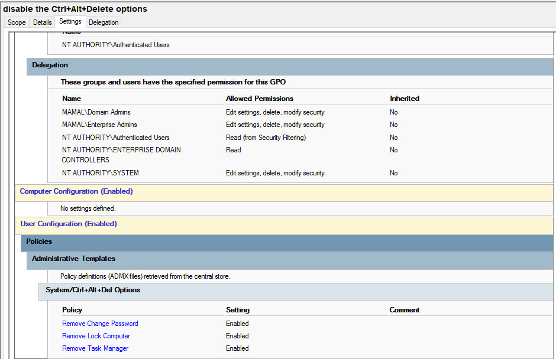

Disable Ctrl + Alt + Del Options
Purpose
This policy restricts access to the Ctrl + Alt + Del security screen options such as Task Manager, Lock Computer, and other system-level controls. It is used to prevent unauthorized system changes and maintain control over lab machines.
How it works
The Group Policy removes or disables access to security options presented after pressing Ctrl + Alt + Del. This prevents users from accessing Task Manager or performing system-level actions that could interfere with lab operations.
How it is applied
- Open Group Policy Management Console (GPMC)
- Edit either Computer Configuration or User Configuration (depending on deployment design)
- Navigate to: User Configuration → Administrative Templates → System → Ctrl+Alt+Del Options
- Enable policies such as:
- Remove Task Manager
- Remove Lock Computer
- Remove Change Password
- Apply changes and run
gpupdate /force
Impact
- Prevents access to Task Manager
- Restricts system-level user actions
- Improves lab security and control
- Reduces risk of process termination or bypass attempts
Screenshot
Ctrl + Alt + Del restriction policy in Group Policy Editor:
